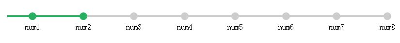

进击の小风
 CSS实现流程图
CSS实现流程图
首先声明这个流程图不支持IE8以下，看看代码就知道了。主要用了CSS里的伪元素，作用就是在元素内容前面或者后面添加新的
内容，这里又要区别以下伪类了，伪元素产生新对象，在dom中看不到，但是可以操作，伪类是dom中一个元素的不同状态。另外还有一个区分方法，伪类的效果可以通过添加一个实际的类来达到，而伪元素的效果则需要通过添加一个实际的元素才能达到，这也是为什么他们一个称为伪类，一个称为伪元素的原因。其实css3为了区分两者，已经明确规定了伪类用一个冒号来表示，而伪元素则用两个冒号来表示。
CSS样式如下：
*{
margin: 0;
padding: 0;
}
.flowChart{
margin: 30px;
overflow: hidden;
}
.flowChart li {
color: #000;
width: 8%;
display: inline-block;
text-align: center;
float: left;
position: relative;
}
.flowChart li:before {
content: ' ';
width: 16px;
height: 16px;
display: block;
text-align: center;
border-radius: 8px;
background-color: #ccc;
color: #fff;
margin: 0 auto 5px auto;
}
.flowChart li:after {
content: '';
width: 100%;
height: 4px;
background: #ccc;
position: absolute;
left: -50%;
top: 6px;
z-index: -1;
}
.flowChart li:first-child:after {
width: 60%;
left: -10%;
}
.flowChart li.active:before, .flowChart li.active:after {
background: #27AE60;
color: white;
}
html部分：
<ul class="flowChart"/>
<li class="active"/>num1</li/>
<li class="active"/>num2</li/>
<li/>num3</li/>
<li/>num4</li/>
<li/>num5</li/>
<li/>num6</li/>
<li/>num7</li/>
<li/>num8</li/>
</ul/>
效果图如下： 
日
一
二
三
四
五
六
评论列表